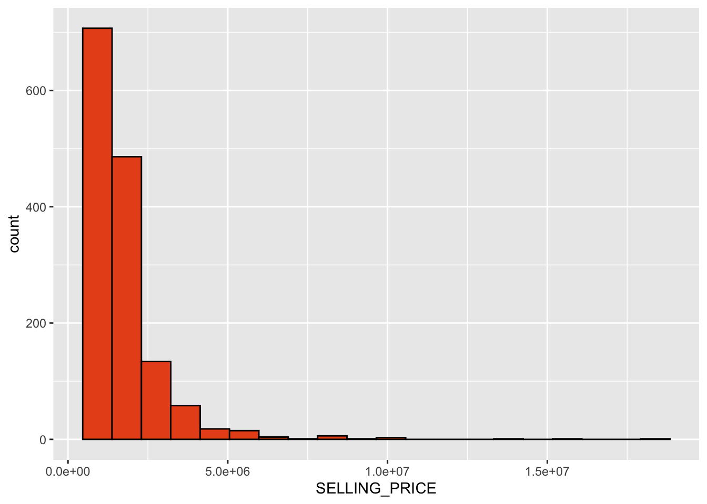
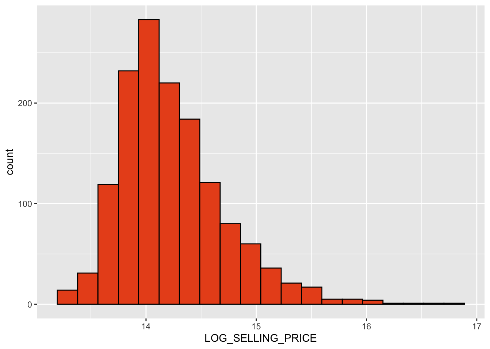
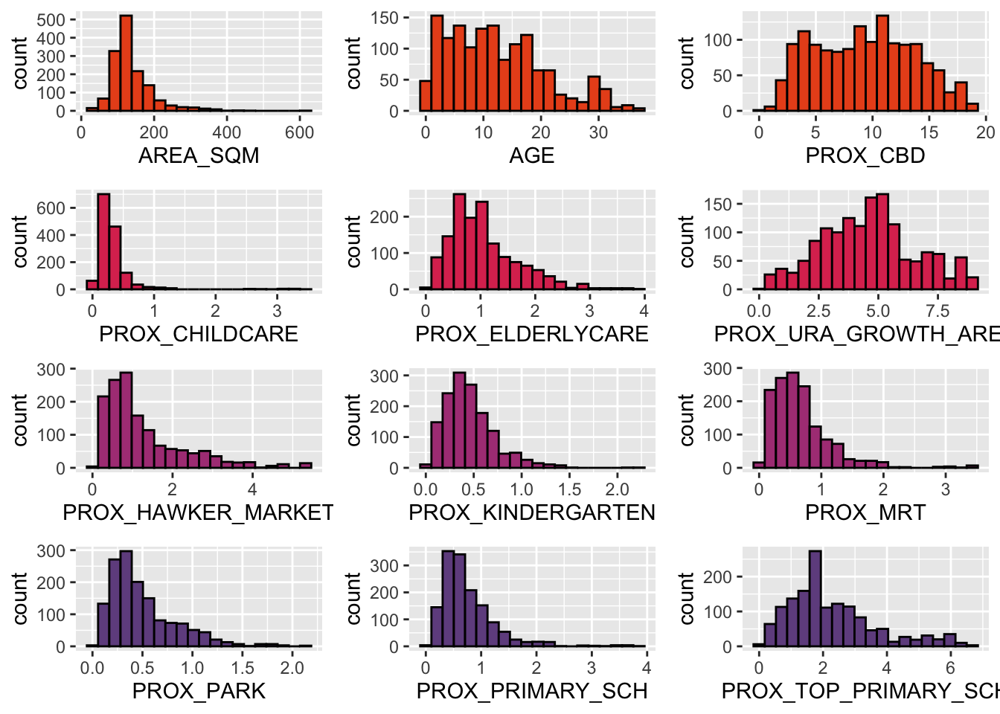
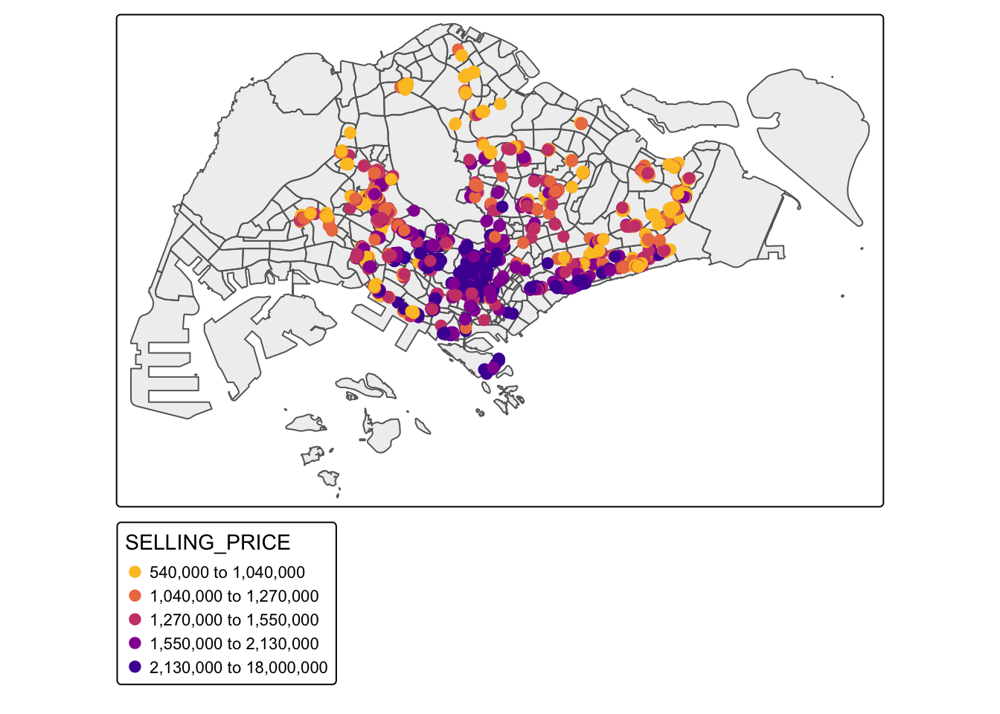
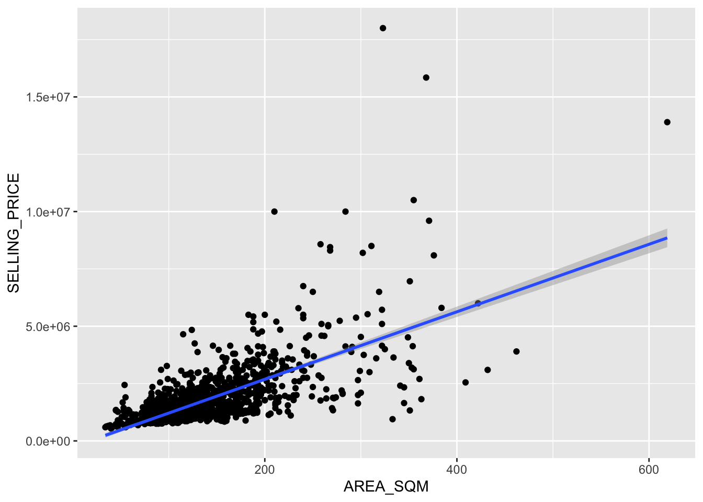
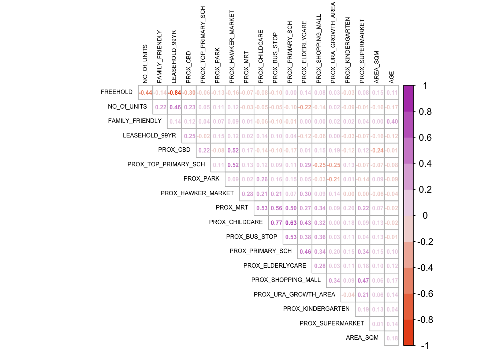
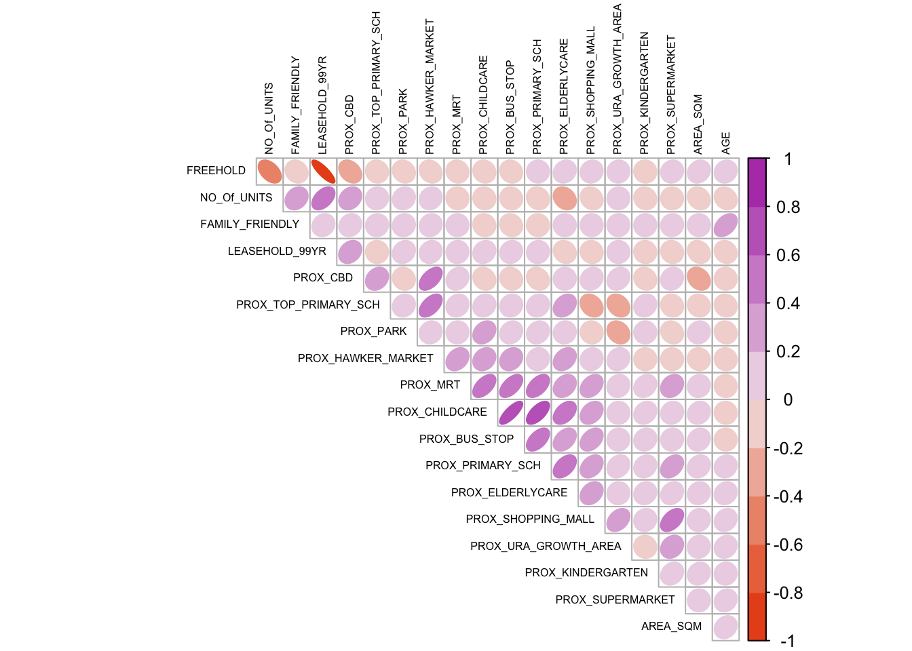
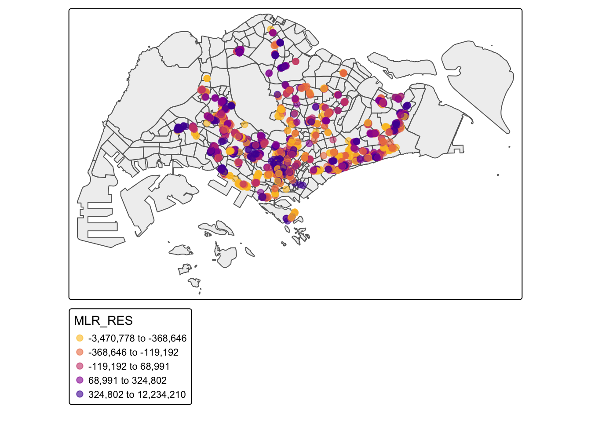
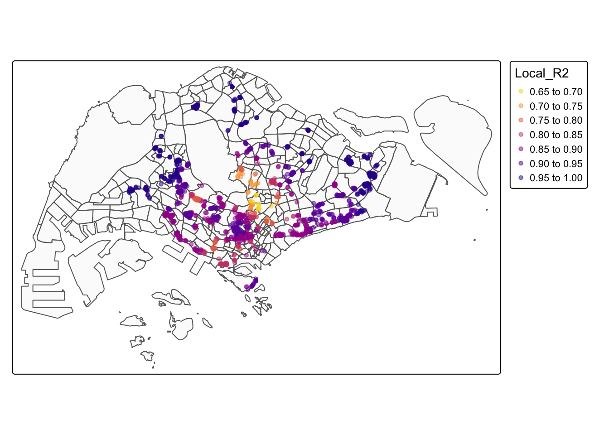
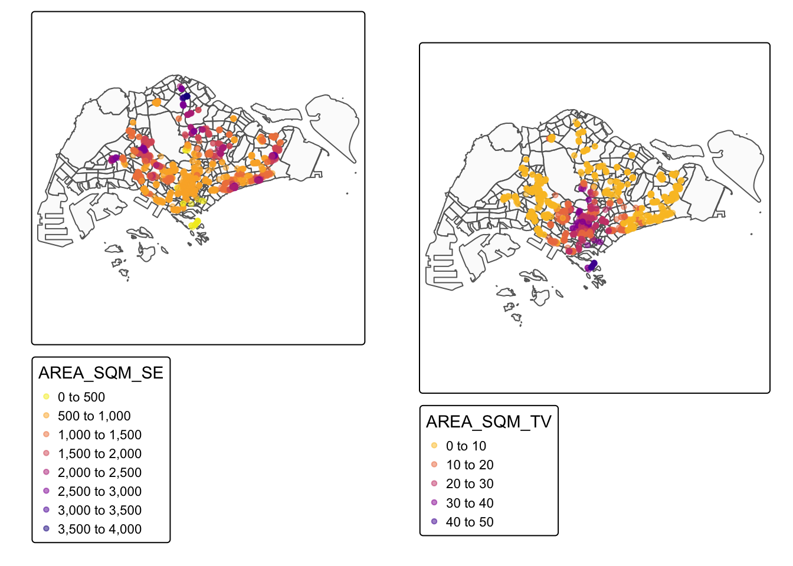

pacman::p_load(olsrr, corrplot, ggpubr, sf, spdep, GWmodel, tmap, tidyverse, gtsummary,vtable, sjPlot, sjmisc, sjlabelled, tableHTML)Hands-On Exercise 08
Hands-On Exercise
R
sf
GWmodel
Geographically Weighted Regression
1.0 Overview
Geographically weighted regression (GWR) is a spatial statistical technique that takes non-stationary variables into consideration (e.g., climate; demographic factors; physical environment characteristics) and models the local relationships between these independent variables and an outcome of interest (also known as dependent variable). In this hands-on exercise, we explore how to build hedonic pricing models by using GWR methods. The dependent variable is the resale prices of condominium in 2015. The independent variables are divided into either structural and locational.
2.0 Importing Datasets and Packages
Firstly, we will install and import necessary R-packages for this modelling exercise. The R packages needed for this exercise are as follows:
R package for building OLS and performing diagnostics tests
R package for calibrating geographical weighted family of models
R package for multivariate data visualisation and analysis
Spatial data handling
- sf
Attribute data handling
- tidyverse, especially readr, ggplot2 and dplyr
Choropleth mapping
- tmap
Next, two data sets will be used in this model building exercise, they are:
URA Master Plan subzone boundary in shapefile format (i.e. MP14_SUBZONE_WEB_PL)
condo_resale_2015 in csv format (i.e. condo_resale_2015.csv)
mpsz = st_read(dsn = "~/IS415-GAA/data/geospatial", layer = "MP14_SUBZONE_WEB_PL")Reading layer `MP14_SUBZONE_WEB_PL' from data source
`/Users/khantminnaing/IS415-GAA/data/geospatial' using driver `ESRI Shapefile'
Simple feature collection with 323 features and 15 fields
Geometry type: MULTIPOLYGON
Dimension: XY
Bounding box: xmin: 2667.538 ymin: 15748.72 xmax: 56396.44 ymax: 50256.33
Projected CRS: SVY21condo_resale = read_csv("~/IS415-GAA/data/aspatial/Condo_resale_2015.csv")Rows: 1436 Columns: 23
── Column specification ────────────────────────────────────────────────────────
Delimiter: ","
dbl (23): LATITUDE, LONGITUDE, POSTCODE, SELLING_PRICE, AREA_SQM, AGE, PROX_...
ℹ Use `spec()` to retrieve the full column specification for this data.
ℹ Specify the column types or set `show_col_types = FALSE` to quiet this message.3.0 Data Wrangling
3.1 Geospatial Data Wrangling
We use st_transform() to update the imported mpsz with the correct ESPG code (i.e. 3414). Then, we use st_bbox() to view the extent of mpsz_svy21.
mpsz_svy21 <- st_transform(mpsz, 3414)
st_crs(mpsz_svy21)Coordinate Reference System:
User input: EPSG:3414
wkt:
PROJCRS["SVY21 / Singapore TM",
BASEGEOGCRS["SVY21",
DATUM["SVY21",
ELLIPSOID["WGS 84",6378137,298.257223563,
LENGTHUNIT["metre",1]]],
PRIMEM["Greenwich",0,
ANGLEUNIT["degree",0.0174532925199433]],
ID["EPSG",4757]],
CONVERSION["Singapore Transverse Mercator",
METHOD["Transverse Mercator",
ID["EPSG",9807]],
PARAMETER["Latitude of natural origin",1.36666666666667,
ANGLEUNIT["degree",0.0174532925199433],
ID["EPSG",8801]],
PARAMETER["Longitude of natural origin",103.833333333333,
ANGLEUNIT["degree",0.0174532925199433],
ID["EPSG",8802]],
PARAMETER["Scale factor at natural origin",1,
SCALEUNIT["unity",1],
ID["EPSG",8805]],
PARAMETER["False easting",28001.642,
LENGTHUNIT["metre",1],
ID["EPSG",8806]],
PARAMETER["False northing",38744.572,
LENGTHUNIT["metre",1],
ID["EPSG",8807]]],
CS[Cartesian,2],
AXIS["northing (N)",north,
ORDER[1],
LENGTHUNIT["metre",1]],
AXIS["easting (E)",east,
ORDER[2],
LENGTHUNIT["metre",1]],
USAGE[
SCOPE["Cadastre, engineering survey, topographic mapping."],
AREA["Singapore - onshore and offshore."],
BBOX[1.13,103.59,1.47,104.07]],
ID["EPSG",3414]]st_bbox(mpsz_svy21) xmin ymin xmax ymax
2667.538 15748.721 56396.440 50256.334 3.1 Aspatial Data Wrangling
We use glimpse() to have a quick overview of the data structure of condo_resale data.
glimpse(condo_resale)Rows: 1,436
Columns: 23
$ LATITUDE <dbl> 1.287145, 1.328698, 1.313727, 1.308563, 1.321437,…
$ LONGITUDE <dbl> 103.7802, 103.8123, 103.7971, 103.8247, 103.9505,…
$ POSTCODE <dbl> 118635, 288420, 267833, 258380, 467169, 466472, 3…
$ SELLING_PRICE <dbl> 3000000, 3880000, 3325000, 4250000, 1400000, 1320…
$ AREA_SQM <dbl> 309, 290, 248, 127, 145, 139, 218, 141, 165, 168,…
$ AGE <dbl> 30, 32, 33, 7, 28, 22, 24, 24, 27, 31, 17, 22, 6,…
$ PROX_CBD <dbl> 7.941259, 6.609797, 6.898000, 4.038861, 11.783402…
$ PROX_CHILDCARE <dbl> 0.16597932, 0.28027246, 0.42922669, 0.39473543, 0…
$ PROX_ELDERLYCARE <dbl> 2.5198118, 1.9333338, 0.5021395, 1.9910316, 1.121…
$ PROX_URA_GROWTH_AREA <dbl> 6.618741, 7.505109, 6.463887, 4.906512, 6.410632,…
$ PROX_HAWKER_MARKET <dbl> 1.76542207, 0.54507614, 0.37789301, 1.68259969, 0…
$ PROX_KINDERGARTEN <dbl> 0.05835552, 0.61592412, 0.14120309, 0.38200076, 0…
$ PROX_MRT <dbl> 0.5607188, 0.6584461, 0.3053433, 0.6910183, 0.528…
$ PROX_PARK <dbl> 1.1710446, 0.1992269, 0.2779886, 0.9832843, 0.116…
$ PROX_PRIMARY_SCH <dbl> 1.6340256, 0.9747834, 1.4715016, 1.4546324, 0.709…
$ PROX_TOP_PRIMARY_SCH <dbl> 3.3273195, 0.9747834, 1.4715016, 2.3006394, 0.709…
$ PROX_SHOPPING_MALL <dbl> 2.2102717, 2.9374279, 1.2256850, 0.3525671, 1.307…
$ PROX_SUPERMARKET <dbl> 0.9103958, 0.5900617, 0.4135583, 0.4162219, 0.581…
$ PROX_BUS_STOP <dbl> 0.10336166, 0.28673408, 0.28504777, 0.29872340, 0…
$ NO_Of_UNITS <dbl> 18, 20, 27, 30, 30, 31, 32, 32, 32, 32, 34, 34, 3…
$ FAMILY_FRIENDLY <dbl> 0, 0, 0, 0, 0, 1, 1, 0, 1, 1, 0, 0, 0, 0, 0, 0, 0…
$ FREEHOLD <dbl> 1, 1, 1, 1, 1, 1, 1, 1, 1, 0, 1, 1, 1, 1, 1, 1, 1…
$ LEASEHOLD_99YR <dbl> 0, 0, 0, 0, 0, 0, 0, 0, 0, 0, 0, 0, 0, 0, 0, 0, 0…To calculate the summary statistics of condo_resale data frame, we use st().
st(condo_resale)| Variable | N | Mean | Std. Dev. | Min | Pctl. 25 | Pctl. 75 | Max |
|---|---|---|---|---|---|---|---|
| LATITUDE | 1436 | 1.3 | 0.038 | 1.2 | 1.3 | 1.4 | 1.5 |
| LONGITUDE | 1436 | 104 | 0.067 | 104 | 104 | 104 | 104 |
| POSTCODE | 1436 | 440439 | 201080 | 18965 | 259849 | 589486 | 828833 |
| SELLING_PRICE | 1436 | 1751211 | 1272778 | 540000 | 1100000 | 1950000 | 18000000 |
| AREA_SQM | 1436 | 137 | 58 | 34 | 103 | 156 | 619 |
| AGE | 1436 | 12 | 8.6 | 0 | 5 | 18 | 37 |
| PROX_CBD | 1436 | 9.3 | 4.3 | 0.39 | 5.6 | 13 | 19 |
| PROX_CHILDCARE | 1436 | 0.33 | 0.33 | 0.0049 | 0.17 | 0.37 | 3.5 |
| PROX_ELDERLYCARE | 1436 | 1.1 | 0.62 | 0.055 | 0.61 | 1.4 | 3.9 |
| PROX_URA_GROWTH_AREA | 1436 | 4.6 | 2 | 0.21 | 3.2 | 5.8 | 9.2 |
| PROX_HAWKER_MARKET | 1436 | 1.3 | 1 | 0.052 | 0.55 | 1.7 | 5.4 |
| PROX_KINDERGARTEN | 1436 | 0.46 | 0.26 | 0.0049 | 0.28 | 0.58 | 2.2 |
| PROX_MRT | 1436 | 0.67 | 0.48 | 0.053 | 0.35 | 0.85 | 3.5 |
| PROX_PARK | 1436 | 0.5 | 0.33 | 0.029 | 0.26 | 0.66 | 2.2 |
| PROX_PRIMARY_SCH | 1436 | 0.75 | 0.49 | 0.077 | 0.44 | 0.95 | 3.9 |
| PROX_TOP_PRIMARY_SCH | 1436 | 2.3 | 1.4 | 0.077 | 1.3 | 2.9 | 6.7 |
| PROX_SHOPPING_MALL | 1436 | 1 | 0.66 | 0 | 0.53 | 1.4 | 3.5 |
| PROX_SUPERMARKET | 1436 | 0.61 | 0.33 | 0 | 0.37 | 0.79 | 2.2 |
| PROX_BUS_STOP | 1436 | 0.19 | 0.25 | 0.0016 | 0.098 | 0.22 | 2.5 |
| NO_Of_UNITS | 1436 | 409 | 273 | 18 | 189 | 590 | 1703 |
| FAMILY_FRIENDLY | 1436 | 0.49 | 0.5 | 0 | 0 | 1 | 1 |
| FREEHOLD | 1436 | 0.42 | 0.49 | 0 | 0 | 1 | 1 |
| LEASEHOLD_99YR | 1436 | 0.49 | 0.5 | 0 | 0 | 1 | 1 |
Finally, we will convert this aspatial data frame into a sf object. To do so, we will use st_as_sf() of sf package.
condo_resale.sf <- st_as_sf(condo_resale,
coords = c("LONGITUDE", "LATITUDE"),
crs=4326) %>% st_transform(crs=3414)
head(condo_resale.sf)Simple feature collection with 6 features and 21 fields
Geometry type: POINT
Dimension: XY
Bounding box: xmin: 22085.12 ymin: 29951.54 xmax: 41042.56 ymax: 34546.2
Projected CRS: SVY21 / Singapore TM
# A tibble: 6 × 22
POSTCODE SELLING_PRICE AREA_SQM AGE PROX_CBD PROX_CHILDCARE PROX_ELDERLYCARE
<dbl> <dbl> <dbl> <dbl> <dbl> <dbl> <dbl>
1 118635 3000000 309 30 7.94 0.166 2.52
2 288420 3880000 290 32 6.61 0.280 1.93
3 267833 3325000 248 33 6.90 0.429 0.502
4 258380 4250000 127 7 4.04 0.395 1.99
5 467169 1400000 145 28 11.8 0.119 1.12
6 466472 1320000 139 22 10.3 0.125 0.789
# ℹ 15 more variables: PROX_URA_GROWTH_AREA <dbl>, PROX_HAWKER_MARKET <dbl>,
# PROX_KINDERGARTEN <dbl>, PROX_MRT <dbl>, PROX_PARK <dbl>,
# PROX_PRIMARY_SCH <dbl>, PROX_TOP_PRIMARY_SCH <dbl>,
# PROX_SHOPPING_MALL <dbl>, PROX_SUPERMARKET <dbl>, PROX_BUS_STOP <dbl>,
# NO_Of_UNITS <dbl>, FAMILY_FRIENDLY <dbl>, FREEHOLD <dbl>,
# LEASEHOLD_99YR <dbl>, geometry <POINT [m]>4.0 Exploratory Data Analysis (EDA)
4.1 EDA Using Statistical Graphics
We can plot the distribution of different data columns by using appropriate Exploratory Data Analysis (EDA). As an example, we will plot SELLING_PRICE.
ggplot(data=condo_resale.sf, aes(x=`SELLING_PRICE`)) +
geom_histogram(bins=20, color="black", fill="#e9531e")
From the figure above, it seems like there is a right skewed distribution. This means that more condominium units were transacted at relative lower prices.
Statistically, the skewed dsitribution can be normalised by using log transformation. The code chunk below is used to derive a new variable called LOG_SELLING_PRICE by using a log transformation on the variable SELLING_PRICE. It is performed using mutate() of dplyr package.
condo_resale.sf <- condo_resale.sf %>%
mutate(`LOG_SELLING_PRICE` = log(SELLING_PRICE))
ggplot(data=condo_resale.sf, aes(x=`LOG_SELLING_PRICE`)) +
geom_histogram(bins=20, color="black", fill="#e9531e")
4.2 EDA Using Multiple Histogram Plots Distribution of Variables
In previous section, we specify a varible to plot. In this section, we will instead draw a small multiple histograms (also known as trellis plot) by using ggarrange() of ggpubr package. In this way, we can see the distribution plots of different variables at the same time.
AREA_SQM <- ggplot(data=condo_resale.sf, aes(x= `AREA_SQM`)) +
geom_histogram(bins=20, color="black", fill="#e9531e")
AGE <- ggplot(data=condo_resale.sf, aes(x= `AGE`)) +
geom_histogram(bins=20, color="black", fill="#e9531e")
PROX_CBD <- ggplot(data=condo_resale.sf, aes(x= `PROX_CBD`)) +
geom_histogram(bins=20, color="black", fill="#e9531e")
PROX_CHILDCARE <- ggplot(data=condo_resale.sf, aes(x= `PROX_CHILDCARE`)) +
geom_histogram(bins=20, color="black", fill="#DC375E")
PROX_ELDERLYCARE <- ggplot(data=condo_resale.sf, aes(x= `PROX_ELDERLYCARE`)) +
geom_histogram(bins=20, color="black", fill="#DC375E")
PROX_URA_GROWTH_AREA <- ggplot(data=condo_resale.sf,
aes(x= `PROX_URA_GROWTH_AREA`)) +
geom_histogram(bins=20, color="black", fill="#DC375E")
PROX_HAWKER_MARKET <- ggplot(data=condo_resale.sf, aes(x= `PROX_HAWKER_MARKET`)) +
geom_histogram(bins=20, color="black", fill="#AE4285")
PROX_KINDERGARTEN <- ggplot(data=condo_resale.sf, aes(x= `PROX_KINDERGARTEN`)) +
geom_histogram(bins=20, color="black", fill="#AE4285")
PROX_MRT <- ggplot(data=condo_resale.sf, aes(x= `PROX_MRT`)) +
geom_histogram(bins=20, color="black", fill="#AE4285")
PROX_PARK <- ggplot(data=condo_resale.sf, aes(x= `PROX_PARK`)) +
geom_histogram(bins=20, color="black", fill="#71508F")
PROX_PRIMARY_SCH <- ggplot(data=condo_resale.sf, aes(x= `PROX_PRIMARY_SCH`)) +
geom_histogram(bins=20, color="black", fill="#71508F")
PROX_TOP_PRIMARY_SCH <- ggplot(data=condo_resale.sf,
aes(x= `PROX_TOP_PRIMARY_SCH`)) +
geom_histogram(bins=20, color="black", fill="#71508F")
ggarrange(AREA_SQM, AGE, PROX_CBD, PROX_CHILDCARE, PROX_ELDERLYCARE,
PROX_URA_GROWTH_AREA, PROX_HAWKER_MARKET, PROX_KINDERGARTEN, PROX_MRT,
PROX_PARK, PROX_PRIMARY_SCH, PROX_TOP_PRIMARY_SCH,
ncol = 3, nrow = 4)
4.3 Drawing Statistical Point Map
Next, we will learn how to reveal the geospatial distribution condominium resale prices in Singapore using statistical point maps. To plot such maps, we will prepare using tmap package.
First, we will turn on the interactive mode of tmap by using the code chunk below.
Then, we will create an interactive point symbol map using the data values from SELLING_PRICE column.
Next, we will turn R display into
plotmode.
#tmap_mode("view")
tmap_options(check.and.fix = TRUE)
tm_shape(mpsz_svy21)+
tm_polygons(alpha = 0.4) +
tm_shape(condo_resale.sf) +
tm_dots(col = "SELLING_PRICE",
palette = "plasma",
alpha = 1,
style="quantile") +
tm_view(set.zoom.limits = c(11,14))Warning: The shape mpsz_svy21 is invalid. See sf::st_is_valid
5.0 Hedonic Pricing Modelling in R
In this section, we will explore how to build a hedonic pricing model for condominium resale units using lm() of R.
5.1 Simple Linear Regression Method
First, we will build a simple linear regression model by using SELLING_PRICE as the dependent variable and AREA_SQM as the independent variable.
condo.slr <- lm(formula=SELLING_PRICE ~ AREA_SQM, data = condo_resale.sf)lm() returns an object of class “lm” or for multiple responses of class c(“mlm”, “lm”).
The functions summary() and anova() can be used to obtain and print a summary and analysis of variance table of the results. The generic accessor functions coefficients, effects, fitted.values and residuals extract various useful features of the value returned by lm.
tab_model(condo.slr)| Dependent variable | |||
| Predictors | Estimates | CI | p |
| (Intercept) | -258121.06 | -382717.70 – -133524.43 | <0.001 |
| AREA SQM | 14719.03 | 13879.23 – 15558.83 | <0.001 |
| Observations | 1436 | ||
| R2 / R2 adjusted | 0.452 / 0.451 | ||
The output report reveals that the SELLING_PRICE can be explained by using the formula:
\(y = -258121.1 + 14719x1\)
The R-squared of 0.4518 reveals that the simple regression model built is able to explain about 45% of the resale prices.
Since p-value is much smaller than 0.001, we will reject the null hypothesis that mean is a good estimator of SELLING_PRICE. This will allow us to infer that simple linear regression model above is a good estimator of SELLING_PRICE.
The Coefficients: section of the report reveals that the p-values of both the estimates of the Intercept and ARA_SQM are smaller than 0.001. In view of this, the null hypothesis of the B0 and B1 are equal to 0 will be rejected. As a results, we will be able to infer that the B0 and B1 are good parameter estimates.
To visualise the best fit curve on a scatterplot, we can incorporate lm() as a method function in ggplot’s geometry as shown in the code chunk below.
ggplot(data=condo_resale.sf,
aes(x=`AREA_SQM`, y=`SELLING_PRICE`)) +
geom_point() +
geom_smooth(method = lm)`geom_smooth()` using formula = 'y ~ x'
Figure above reveals that there are a few statistical outliers with relatively high selling prices.
5.2 Multiple Linear Regression Method
Before building a multiple regression model, it is important to ensure that the indepdent variables used are not highly correlated to each other. If these highly correlated independent variables are used in building a regression model by mistake, the quality of the model will be compromised. This phenomenon is known as multicollinearity in statistics.
Correlation matrix is commonly used to visualise the relationships between the independent variables. In this section, the corrplot package will be used to display the correlation matrix of the independent variables in condo_resale data frame.
corrplot(cor(condo_resale[, 5:23]), diag = FALSE, order = "AOE",
col=colorRampPalette(c("#E9531E","#F4E8EC","#B445B8"))(10),
tl.pos = "td", tl.cex = 0.5,tl.col = "black", number.cex = 0.5, method = "number", type = "upper")
corrplot(cor(condo_resale[, 5:23]), diag = FALSE, order = "AOE",
col=colorRampPalette(c("#E9531E","#F4E8EC","#B445B8"))(10),
tl.pos = "td", tl.cex = 0.5,tl.col = "black", number.cex = 0.5, method = "ellipse", type = "upper")
Matrix reorder is very important for mining the hiden structure and patter in the matrix. There are four methods in corrplot (parameter order), named “AOE”, “FPC”, “hclust”, “alphabet”. In the code chunk above, AOE order is used. It orders the variables by using the angular order of the eigenvectors method suggested by Michael Friendly.
From the scatterplot matrix, it is clear that Freehold is highly correlated to LEASE_99YEAR. In view of this, it is wiser to only include either one of them in the subsequent model building. As a result, LEASE_99YEAR is excluded in the subsequent model building.
5.3 Building a Hedonic Pricing Model Using Multiple Linear Regression Method
Now, we will build a hedonic pricing model of SELLING_PRICE using multiple linear regression method that we explored in previous section.
condo.mlr <- lm(formula = SELLING_PRICE ~ AREA_SQM + AGE +
PROX_CBD + PROX_CHILDCARE + PROX_ELDERLYCARE +
PROX_URA_GROWTH_AREA + PROX_HAWKER_MARKET + PROX_KINDERGARTEN +
PROX_MRT + PROX_PARK + PROX_PRIMARY_SCH +
PROX_TOP_PRIMARY_SCH + PROX_SHOPPING_MALL + PROX_SUPERMARKET +
PROX_BUS_STOP + NO_Of_UNITS + FAMILY_FRIENDLY + FREEHOLD,
data=condo_resale.sf)
tab_model(condo.mlr, show.fstat = TRUE,
show.aic = TRUE,show.aicc = TRUE)| Dependent variable | |||
| Predictors | Estimates | CI | p |
| (Intercept) | 481728.40 | 243504.91 – 719951.90 | <0.001 |
| AREA SQM | 12708.32 | 11983.32 – 13433.33 | <0.001 |
| AGE | -24440.82 | -29861.15 – -19020.48 | <0.001 |
| PROX CBD | -78669.78 | -91948.06 – -65391.50 | <0.001 |
| PROX CHILDCARE | -351617.91 | -566353.20 – -136882.62 | 0.001 |
| PROX ELDERLYCARE | 171029.42 | 88423.78 – 253635.05 | <0.001 |
| PROX URA GROWTH AREA | 38474.53 | 13907.81 – 63041.26 | 0.002 |
| PROX HAWKER MARKET | 23746.10 | -33729.46 – 81221.66 | 0.418 |
| PROX KINDERGARTEN | 147468.99 | -14697.53 – 309635.51 | 0.075 |
| PROX MRT | -314599.68 | -428271.67 – -200927.69 | <0.001 |
| PROX PARK | 563280.50 | 432730.10 – 693830.90 | <0.001 |
| PROX PRIMARY SCH | 180186.08 | 52212.74 – 308159.42 | 0.006 |
| PROX TOP PRIMARY SCH | 2280.04 | -37757.88 – 42317.95 | 0.911 |
| PROX SHOPPING MALL | -206604.06 | -290641.86 – -122566.25 | <0.001 |
| PROX SUPERMARKET | -44991.80 | -196200.15 – 106216.54 | 0.560 |
| PROX BUS STOP | 683121.35 | 411722.09 – 954520.61 | <0.001 |
| NO Of UNITS | -231.18 | -405.83 – -56.53 | 0.010 |
| FAMILY FRIENDLY | 140340.77 | 48103.40 – 232578.14 | 0.003 |
| FREEHOLD | 359913.01 | 263360.67 – 456465.35 | <0.001 |
| Observations | 1436 | ||
| R2 / R2 adjusted | 0.652 / 0.647 | ||
| AIC | 42970.175 | ||
| AICc | 42970.769 | ||
With reference to the table above, it is clear that not all the independent variables are statistically significant (i.e. some variables resulted in p-value > 0.05). We will revised the model by removing those variables which are not statistically significant.
condo.mlr1 <- lm(formula = SELLING_PRICE ~ AREA_SQM + AGE +
PROX_CBD + PROX_CHILDCARE + PROX_ELDERLYCARE +
PROX_URA_GROWTH_AREA + PROX_MRT + PROX_PARK +
PROX_PRIMARY_SCH + PROX_SHOPPING_MALL + PROX_BUS_STOP +
NO_Of_UNITS + FAMILY_FRIENDLY + FREEHOLD,
data=condo_resale.sf)
tab_model(condo.mlr, show.fstat = TRUE,
show.aic = TRUE,show.aicc = TRUE)| Dependent variable | |||
| Predictors | Estimates | CI | p |
| (Intercept) | 481728.40 | 243504.91 – 719951.90 | <0.001 |
| AREA SQM | 12708.32 | 11983.32 – 13433.33 | <0.001 |
| AGE | -24440.82 | -29861.15 – -19020.48 | <0.001 |
| PROX CBD | -78669.78 | -91948.06 – -65391.50 | <0.001 |
| PROX CHILDCARE | -351617.91 | -566353.20 – -136882.62 | 0.001 |
| PROX ELDERLYCARE | 171029.42 | 88423.78 – 253635.05 | <0.001 |
| PROX URA GROWTH AREA | 38474.53 | 13907.81 – 63041.26 | 0.002 |
| PROX HAWKER MARKET | 23746.10 | -33729.46 – 81221.66 | 0.418 |
| PROX KINDERGARTEN | 147468.99 | -14697.53 – 309635.51 | 0.075 |
| PROX MRT | -314599.68 | -428271.67 – -200927.69 | <0.001 |
| PROX PARK | 563280.50 | 432730.10 – 693830.90 | <0.001 |
| PROX PRIMARY SCH | 180186.08 | 52212.74 – 308159.42 | 0.006 |
| PROX TOP PRIMARY SCH | 2280.04 | -37757.88 – 42317.95 | 0.911 |
| PROX SHOPPING MALL | -206604.06 | -290641.86 – -122566.25 | <0.001 |
| PROX SUPERMARKET | -44991.80 | -196200.15 – 106216.54 | 0.560 |
| PROX BUS STOP | 683121.35 | 411722.09 – 954520.61 | <0.001 |
| NO Of UNITS | -231.18 | -405.83 – -56.53 | 0.010 |
| FAMILY FRIENDLY | 140340.77 | 48103.40 – 232578.14 | 0.003 |
| FREEHOLD | 359913.01 | 263360.67 – 456465.35 | <0.001 |
| Observations | 1436 | ||
| R2 / R2 adjusted | 0.652 / 0.647 | ||
| AIC | 42970.175 | ||
| AICc | 42970.769 | ||
5.4 Checking for Multicollinearity
In this section, we will explore a R package specially programmed for performing OLS regression. It is called olsrr. It provides a collection of very useful methods for building better multiple linear regression models:
comprehensive regression output
residual diagnostics
measures of influence
heteroskedasticity tests
collinearity diagnostics
model fit assessment
variable contribution assessment
variable selection procedures
Now that we have built a multiple linear regression in previous session, we will now use ols_vif_tol() of olsrr package to test if there are sign of multicollinearity.
multicol_stats <- ols_vif_tol(condo.mlr1)
tableHTML(multicol_stats)| Variables | Tolerance | VIF | |
|---|---|---|---|
| 1 | AREA_SQM | 0.872855423242667 | 1.14566510486352 |
| 2 | AGE | 0.707127520156393 | 1.41417208564989 |
| 3 | PROX_CBD | 0.635614652878236 | 1.57328028149088 |
| 4 | PROX_CHILDCARE | 0.306601856967953 | 3.26155884993391 |
| 5 | PROX_ELDERLYCARE | 0.659847919847265 | 1.51550072360836 |
| 6 | PROX_URA_GROWTH_AREA | 0.751031083374135 | 1.33150281278283 |
| 7 | PROX_MRT | 0.523608983366243 | 1.90982208435592 |
| 8 | PROX_PARK | 0.827926085868263 | 1.20783729015046 |
| 9 | PROX_PRIMARY_SCH | 0.452462836020451 | 2.21012626980661 |
| 10 | PROX_SHOPPING_MALL | 0.673879496684337 | 1.48394483720051 |
| 11 | PROX_BUS_STOP | 0.351411792499116 | 2.84566432130337 |
| 12 | NO_Of_UNITS | 0.690103613311802 | 1.44905776568972 |
| 13 | FAMILY_FRIENDLY | 0.724415713651706 | 1.38042284444535 |
| 14 | FREEHOLD | 0.693116329580593 | 1.44275925601854 |
Since the VIF of the independent variables are less than 10. We can safely conclude that there are no sign of multicollinearity among the independent variables.
5.5 Test for Non-Linearity
In multiple linear regression, it is important for us to test the assumption that linearity and additivity of the relationship between dependent and independent variables.
We will use ols_plot_resid_fit() of olsrr package to perform linearity assumption test.
ols_plot_resid_fit(condo.mlr1)
The figure above reveals that most of the data points are scattered around the 0 line, hence we can safely conclude that the relationships between the dependent variable and independent variables are linear.
5.6 Test for Normality Assumption
Lastly, we will use ols_plot_resid_hist() of olsrr package to perform normality assumption test.
ols_plot_resid_hist(condo.mlr1)
normality_stats <- ols_test_normality(condo.mlr1)Warning in ks.test.default(y, "pnorm", mean(y), sd(y)): ties should not be
present for the Kolmogorov-Smirnov testnormality_stats-----------------------------------------------
Test Statistic pvalue
-----------------------------------------------
Shapiro-Wilk 0.6856 0.0000
Kolmogorov-Smirnov 0.1366 0.0000
Cramer-von Mises 121.0768 0.0000
Anderson-Darling 67.9551 0.0000
-----------------------------------------------The summary table above reveals that the p-values of the four tests are way smaller than the alpha value of 0.05. Hence we will reject the null hypothesis and infer that there is statistical evidence that the residual are not normally distributed.
5.7 Test for Spatial Autocorrelation
The hedonic model we try to build are using geographically referenced attributes, hence it is also important for us to visual the residual of the hedonic pricing model.
In order to perform spatial autocorrelation test, we need to convert condo_resale.sf from sf data frame into a SpatialPointsDataFrame.
First, we will export the residual of the hedonic pricing model and save it as a data frame.
Next, we will join the newly created data frame with condo_resale.sf object.
Next, we will convert condo_resale.res.sf from simple feature object into a SpatialPointsDataFrame because spdep package can only process sp conformed spatial data objects.
mlr.output <- as.data.frame(condo.mlr1$residuals)
condo_resale.res.sf <- cbind(condo_resale.sf,
condo.mlr1$residuals) %>%
rename(`MLR_RES` = `condo.mlr1.residuals`)
condo_resale.sp <- as_Spatial(condo_resale.res.sf)
condo_resale.spclass : SpatialPointsDataFrame
features : 1436
extent : 14940.85, 43352.45, 24765.67, 48382.81 (xmin, xmax, ymin, ymax)
crs : +proj=tmerc +lat_0=1.36666666666667 +lon_0=103.833333333333 +k=1 +x_0=28001.642 +y_0=38744.572 +ellps=WGS84 +towgs84=0,0,0,0,0,0,0 +units=m +no_defs
variables : 23
names : POSTCODE, SELLING_PRICE, AREA_SQM, AGE, PROX_CBD, PROX_CHILDCARE, PROX_ELDERLYCARE, PROX_URA_GROWTH_AREA, PROX_HAWKER_MARKET, PROX_KINDERGARTEN, PROX_MRT, PROX_PARK, PROX_PRIMARY_SCH, PROX_TOP_PRIMARY_SCH, PROX_SHOPPING_MALL, ...
min values : 18965, 540000, 34, 0, 0.386916393, 0.004927023, 0.054508623, 0.214539508, 0.051817113, 0.004927023, 0.052779424, 0.029064164, 0.077106132, 0.077106132, 0, ...
max values : 828833, 1.8e+07, 619, 37, 19.18042832, 3.46572633, 3.949157205, 9.15540001, 5.374348075, 2.229045366, 3.48037319, 2.16104919, 3.928989144, 6.748192062, 3.477433767, ... Next, we will use tmap package to display the distribution of the residuals on an interactive map.
tm_shape(mpsz_svy21)+
tmap_options(check.and.fix = TRUE) +
tm_polygons(alpha = 0.4) +
tm_shape(condo_resale.res.sf) +
tm_dots(col = "MLR_RES",
palette = "plasma",
alpha = 0.6,
style="quantile") +
tm_view(set.zoom.limits = c(11,14))Warning: The shape mpsz_svy21 is invalid. See sf::st_is_valid
The figure above seems to indicate that there is sign of spatial autocorrelation. However, to prove that our observation is indeed true, the Moran’s I test will be performed.
First, we will compute the distance-based weight matrix by using dnearneigh() function of spdep.
nb <- dnearneigh(coordinates(condo_resale.sp), 0, 1500, longlat = FALSE)
nb_summary <- summary(nb)
nb_summaryNeighbour list object:
Number of regions: 1436
Number of nonzero links: 66266
Percentage nonzero weights: 3.213526
Average number of links: 46.14624
10 disjoint connected subgraphs
Link number distribution:
1 3 5 7 9 10 11 12 13 14 15 16 17 18 19 20 21 22 23 24
3 3 9 4 3 15 10 19 17 45 19 5 14 29 19 6 35 45 18 47
25 26 27 28 29 30 31 32 33 34 35 36 37 38 39 40 41 42 43 44
16 43 22 26 21 11 9 23 22 13 16 25 21 37 16 18 8 21 4 12
45 46 47 48 49 50 51 52 53 54 55 56 57 58 59 60 61 62 63 64
8 36 18 14 14 43 11 12 8 13 12 13 4 5 6 12 11 20 29 33
65 66 67 68 69 70 71 72 73 74 75 76 77 78 79 80 81 82 83 84
15 20 10 14 15 15 11 16 12 10 8 19 12 14 9 8 4 13 11 6
85 86 87 88 89 90 91 92 93 94 95 96 97 98 99 100 101 102 103 104
4 9 4 4 4 6 2 16 9 4 5 9 3 9 4 2 1 2 1 1
105 106 107 108 109 110 112 116 125
1 5 9 2 1 3 1 1 1
3 least connected regions:
193 194 277 with 1 link
1 most connected region:
285 with 125 linksNext, nb2listw() of spdep packge will be used to convert the output neighbours lists (i.e. nb) into a spatial weights.
nb_lw <- nb2listw(nb, style = 'W')
summary(nb_lw)Characteristics of weights list object:
Neighbour list object:
Number of regions: 1436
Number of nonzero links: 66266
Percentage nonzero weights: 3.213526
Average number of links: 46.14624
10 disjoint connected subgraphs
Link number distribution:
1 3 5 7 9 10 11 12 13 14 15 16 17 18 19 20 21 22 23 24
3 3 9 4 3 15 10 19 17 45 19 5 14 29 19 6 35 45 18 47
25 26 27 28 29 30 31 32 33 34 35 36 37 38 39 40 41 42 43 44
16 43 22 26 21 11 9 23 22 13 16 25 21 37 16 18 8 21 4 12
45 46 47 48 49 50 51 52 53 54 55 56 57 58 59 60 61 62 63 64
8 36 18 14 14 43 11 12 8 13 12 13 4 5 6 12 11 20 29 33
65 66 67 68 69 70 71 72 73 74 75 76 77 78 79 80 81 82 83 84
15 20 10 14 15 15 11 16 12 10 8 19 12 14 9 8 4 13 11 6
85 86 87 88 89 90 91 92 93 94 95 96 97 98 99 100 101 102 103 104
4 9 4 4 4 6 2 16 9 4 5 9 3 9 4 2 1 2 1 1
105 106 107 108 109 110 112 116 125
1 5 9 2 1 3 1 1 1
3 least connected regions:
193 194 277 with 1 link
1 most connected region:
285 with 125 links
Weights style: W
Weights constants summary:
n nn S0 S1 S2
W 1436 2062096 1436 94.81916 5798.341Next, lm.morantest() of spdep package will be used to perform Moran’s I test for residual spatial autocorrelation
lm.morantest(condo.mlr1, nb_lw)
Global Moran I for regression residuals
data:
model: lm(formula = SELLING_PRICE ~ AREA_SQM + AGE + PROX_CBD +
PROX_CHILDCARE + PROX_ELDERLYCARE + PROX_URA_GROWTH_AREA + PROX_MRT +
PROX_PARK + PROX_PRIMARY_SCH + PROX_SHOPPING_MALL + PROX_BUS_STOP +
NO_Of_UNITS + FAMILY_FRIENDLY + FREEHOLD, data = condo_resale.sf)
weights: nb_lw
Moran I statistic standard deviate = 24.366, p-value < 2.2e-16
alternative hypothesis: greater
sample estimates:
Observed Moran I Expectation Variance
1.438876e-01 -5.487594e-03 3.758259e-05 The Global Moran’s I test for residual spatial autocorrelation shows that it’s p-value is less than 0.00000000000000022 which is less than the alpha value of 0.05. Hence, we will reject the null hypothesis that the residuals are randomly distributed.
Since the Observed Global Moran I = 0.1424418 which is greater than 0, we can infer than the residuals resemble cluster distribution.
6.0 Building Hedonic Pricing Model using GWmodel
After exploring the use of linear regression and multiple linear regression in previous sessions, we will now explore how to model hedonic pricing using both the fixed and adaptive bandwidth schemes.
GWR is an outgrowth of ordinary least squares regression (OLS); and adds a level of modeling sophistication by allowing the relationships between the independent and dependent variables to vary by locality. Note that the basic OLS regression model above is just a special case of the GWR model where the coefficients are constant over space. The parameters in the GWR are estimated by weighted least squares. The weighting matrix is a diagonal matrix, with each diagonal element wij being a function of the location of the observation. The role of the weight matrix is to give more value to observations that are close to i, as it is assumed that observations that are close will influence each other more than those that are far away (Tobler’s Law).
There are three major decisions to make when running a GWR: (1) the bandwidth h of the function, which determines the degree of distance decay, (2) the kernel density function assigning weights wij ,and (3) who to count as neighbors.
6.1 Computing Bandwidth
To calculate the optimal bandwidth to use in the model, bw.gwr() of GWModel package can be used, with both fixed and adapative mode. Also, There are two possible approaches can be uused to determine the stopping rule, they are: CV cross-validation approach and AIC corrected (AICc) approach. We define the stopping rule using approach argeement.
bw.fixed <- bw.gwr(formula = SELLING_PRICE ~ AREA_SQM + AGE + PROX_CBD +
PROX_CHILDCARE + PROX_ELDERLYCARE + PROX_URA_GROWTH_AREA +
PROX_MRT + PROX_PARK + PROX_PRIMARY_SCH +
PROX_SHOPPING_MALL + PROX_BUS_STOP + NO_Of_UNITS +
FAMILY_FRIENDLY + FREEHOLD,
data=condo_resale.sp,
approach="CV",
kernel="gaussian",
adaptive=FALSE,
longlat=FALSE)Fixed bandwidth: 17660.96 CV score: 8.259118e+14
Fixed bandwidth: 10917.26 CV score: 7.970454e+14
Fixed bandwidth: 6749.419 CV score: 7.273273e+14
Fixed bandwidth: 4173.553 CV score: 6.300006e+14
Fixed bandwidth: 2581.58 CV score: 5.404958e+14
Fixed bandwidth: 1597.687 CV score: 4.857515e+14
Fixed bandwidth: 989.6077 CV score: 4.722431e+14
Fixed bandwidth: 613.7939 CV score: 1.379526e+16
Fixed bandwidth: 1221.873 CV score: 4.778717e+14
Fixed bandwidth: 846.0596 CV score: 4.791629e+14
Fixed bandwidth: 1078.325 CV score: 4.751406e+14
Fixed bandwidth: 934.7772 CV score: 4.72518e+14
Fixed bandwidth: 1023.495 CV score: 4.730305e+14
Fixed bandwidth: 968.6643 CV score: 4.721317e+14
Fixed bandwidth: 955.7206 CV score: 4.722072e+14
Fixed bandwidth: 976.6639 CV score: 4.721387e+14
Fixed bandwidth: 963.7202 CV score: 4.721484e+14
Fixed bandwidth: 971.7199 CV score: 4.721293e+14
Fixed bandwidth: 973.6083 CV score: 4.721309e+14
Fixed bandwidth: 970.5527 CV score: 4.721295e+14
Fixed bandwidth: 972.4412 CV score: 4.721296e+14
Fixed bandwidth: 971.2741 CV score: 4.721292e+14
Fixed bandwidth: 970.9985 CV score: 4.721293e+14
Fixed bandwidth: 971.4443 CV score: 4.721292e+14
Fixed bandwidth: 971.5496 CV score: 4.721293e+14
Fixed bandwidth: 971.3793 CV score: 4.721292e+14
Fixed bandwidth: 971.3391 CV score: 4.721292e+14
Fixed bandwidth: 971.3143 CV score: 4.721292e+14
Fixed bandwidth: 971.3545 CV score: 4.721292e+14
Fixed bandwidth: 971.3296 CV score: 4.721292e+14
Fixed bandwidth: 971.345 CV score: 4.721292e+14
Fixed bandwidth: 971.3355 CV score: 4.721292e+14
Fixed bandwidth: 971.3413 CV score: 4.721292e+14
Fixed bandwidth: 971.3377 CV score: 4.721292e+14
Fixed bandwidth: 971.34 CV score: 4.721292e+14
Fixed bandwidth: 971.3405 CV score: 4.721292e+14
Fixed bandwidth: 971.3396 CV score: 4.721292e+14
Fixed bandwidth: 971.3402 CV score: 4.721292e+14
Fixed bandwidth: 971.3398 CV score: 4.721292e+14
Fixed bandwidth: 971.34 CV score: 4.721292e+14
Fixed bandwidth: 971.3399 CV score: 4.721292e+14
Fixed bandwidth: 971.34 CV score: 4.721292e+14 bw.adaptive <- bw.gwr(formula = SELLING_PRICE ~ AREA_SQM + AGE + PROX_CBD +
PROX_CHILDCARE + PROX_ELDERLYCARE + PROX_URA_GROWTH_AREA +
PROX_MRT + PROX_PARK + PROX_PRIMARY_SCH +
PROX_SHOPPING_MALL + PROX_BUS_STOP + NO_Of_UNITS +
FAMILY_FRIENDLY + FREEHOLD,
data=condo_resale.sp,
approach="CV",
kernel="gaussian",
adaptive=TRUE,
longlat=FALSE)Adaptive bandwidth: 895 CV score: 7.952401e+14
Adaptive bandwidth: 561 CV score: 7.667364e+14
Adaptive bandwidth: 354 CV score: 6.953454e+14
Adaptive bandwidth: 226 CV score: 6.15223e+14
Adaptive bandwidth: 147 CV score: 5.674373e+14
Adaptive bandwidth: 98 CV score: 5.426745e+14
Adaptive bandwidth: 68 CV score: 5.168117e+14
Adaptive bandwidth: 49 CV score: 4.859631e+14
Adaptive bandwidth: 37 CV score: 4.646518e+14
Adaptive bandwidth: 30 CV score: 4.422088e+14
Adaptive bandwidth: 25 CV score: 4.430816e+14
Adaptive bandwidth: 32 CV score: 4.505602e+14
Adaptive bandwidth: 27 CV score: 4.462172e+14
Adaptive bandwidth: 30 CV score: 4.422088e+14 6.2 Building Basic GWModel with Fixed and Adaptive Bandwidth
Now we can use the fixed and adaptive bandwidth values above to calibrate the gwr model using gaussian kernel (which is the default kernel density function).
gwr.fixed <- gwr.basic(formula = SELLING_PRICE ~ AREA_SQM + AGE + PROX_CBD + PROX_CHILDCARE + PROX_ELDERLYCARE + PROX_URA_GROWTH_AREA +
PROX_MRT + PROX_PARK + PROX_PRIMARY_SCH +
PROX_SHOPPING_MALL + PROX_BUS_STOP + NO_Of_UNITS +
FAMILY_FRIENDLY + FREEHOLD,
data=condo_resale.sp,
bw=bw.fixed,
kernel = 'gaussian',
longlat = FALSE)
gwr.adaptive <- gwr.basic(formula = SELLING_PRICE ~ AREA_SQM + AGE +
PROX_CBD + PROX_CHILDCARE + PROX_ELDERLYCARE +
PROX_URA_GROWTH_AREA + PROX_MRT + PROX_PARK +
PROX_PRIMARY_SCH + PROX_SHOPPING_MALL + PROX_BUS_STOP +
NO_Of_UNITS + FAMILY_FRIENDLY + FREEHOLD,
data=condo_resale.sp, bw=bw.adaptive,
kernel = 'gaussian',
adaptive=TRUE,
longlat = FALSE)
gwr.fixed ***********************************************************************
* Package GWmodel *
***********************************************************************
Program starts at: 2024-01-26 17:58:44.067698
Call:
gwr.basic(formula = SELLING_PRICE ~ AREA_SQM + AGE + PROX_CBD +
PROX_CHILDCARE + PROX_ELDERLYCARE + PROX_URA_GROWTH_AREA +
PROX_MRT + PROX_PARK + PROX_PRIMARY_SCH + PROX_SHOPPING_MALL +
PROX_BUS_STOP + NO_Of_UNITS + FAMILY_FRIENDLY + FREEHOLD,
data = condo_resale.sp, bw = bw.fixed, kernel = "gaussian",
longlat = FALSE)
Dependent (y) variable: SELLING_PRICE
Independent variables: AREA_SQM AGE PROX_CBD PROX_CHILDCARE PROX_ELDERLYCARE PROX_URA_GROWTH_AREA PROX_MRT PROX_PARK PROX_PRIMARY_SCH PROX_SHOPPING_MALL PROX_BUS_STOP NO_Of_UNITS FAMILY_FRIENDLY FREEHOLD
Number of data points: 1436
***********************************************************************
* Results of Global Regression *
***********************************************************************
Call:
lm(formula = formula, data = data)
Residuals:
Min 1Q Median 3Q Max
-3470778 -298119 -23481 248917 12234210
Coefficients:
Estimate Std. Error t value Pr(>|t|)
(Intercept) 527633.22 108183.22 4.877 1.20e-06 ***
AREA_SQM 12777.52 367.48 34.771 < 2e-16 ***
AGE -24687.74 2754.84 -8.962 < 2e-16 ***
PROX_CBD -77131.32 5763.12 -13.384 < 2e-16 ***
PROX_CHILDCARE -318472.75 107959.51 -2.950 0.003231 **
PROX_ELDERLYCARE 185575.62 39901.86 4.651 3.61e-06 ***
PROX_URA_GROWTH_AREA 39163.25 11754.83 3.332 0.000885 ***
PROX_MRT -294745.11 56916.37 -5.179 2.56e-07 ***
PROX_PARK 570504.81 65507.03 8.709 < 2e-16 ***
PROX_PRIMARY_SCH 159856.14 60234.60 2.654 0.008046 **
PROX_SHOPPING_MALL -220947.25 36561.83 -6.043 1.93e-09 ***
PROX_BUS_STOP 682482.22 134513.24 5.074 4.42e-07 ***
NO_Of_UNITS -245.48 87.95 -2.791 0.005321 **
FAMILY_FRIENDLY 146307.58 46893.02 3.120 0.001845 **
FREEHOLD 350599.81 48506.48 7.228 7.98e-13 ***
---Significance stars
Signif. codes: 0 '***' 0.001 '**' 0.01 '*' 0.05 '.' 0.1 ' ' 1
Residual standard error: 756000 on 1421 degrees of freedom
Multiple R-squared: 0.6507
Adjusted R-squared: 0.6472
F-statistic: 189.1 on 14 and 1421 DF, p-value: < 2.2e-16
***Extra Diagnostic information
Residual sum of squares: 8.120609e+14
Sigma(hat): 752522.9
AIC: 42966.76
AICc: 42967.14
BIC: 41731.39
***********************************************************************
* Results of Geographically Weighted Regression *
***********************************************************************
*********************Model calibration information*********************
Kernel function: gaussian
Fixed bandwidth: 971.34
Regression points: the same locations as observations are used.
Distance metric: Euclidean distance metric is used.
****************Summary of GWR coefficient estimates:******************
Min. 1st Qu. Median 3rd Qu.
Intercept -3.5988e+07 -5.1998e+05 7.6780e+05 1.7412e+06
AREA_SQM 1.0003e+03 5.2758e+03 7.4740e+03 1.2301e+04
AGE -1.3475e+05 -2.0813e+04 -8.6260e+03 -3.7784e+03
PROX_CBD -7.7047e+07 -2.3608e+05 -8.3599e+04 3.4646e+04
PROX_CHILDCARE -6.0097e+06 -3.3667e+05 -9.7426e+04 2.9007e+05
PROX_ELDERLYCARE -3.5001e+06 -1.5970e+05 3.1970e+04 1.9577e+05
PROX_URA_GROWTH_AREA -3.0170e+06 -8.2013e+04 7.0749e+04 2.2612e+05
PROX_MRT -3.5282e+06 -6.5836e+05 -1.8833e+05 3.6922e+04
PROX_PARK -1.2062e+06 -2.1732e+05 3.5383e+04 4.1335e+05
PROX_PRIMARY_SCH -2.2695e+07 -1.7066e+05 4.8472e+04 5.1555e+05
PROX_SHOPPING_MALL -7.2585e+06 -1.6684e+05 -1.0517e+04 1.5923e+05
PROX_BUS_STOP -1.4676e+06 -4.5207e+04 3.7601e+05 1.1664e+06
NO_Of_UNITS -1.3170e+03 -2.4822e+02 -3.0846e+01 2.5496e+02
FAMILY_FRIENDLY -2.2749e+06 -1.1140e+05 7.6214e+03 1.6107e+05
FREEHOLD -9.2067e+06 3.8074e+04 1.5169e+05 3.7528e+05
Max.
Intercept 112794435
AREA_SQM 21575
AGE 434203
PROX_CBD 2704604
PROX_CHILDCARE 1654086
PROX_ELDERLYCARE 38867861
PROX_URA_GROWTH_AREA 78515805
PROX_MRT 3124325
PROX_PARK 18122439
PROX_PRIMARY_SCH 4637517
PROX_SHOPPING_MALL 1529953
PROX_BUS_STOP 11342209
NO_Of_UNITS 12907
FAMILY_FRIENDLY 1720745
FREEHOLD 6073642
************************Diagnostic information*************************
Number of data points: 1436
Effective number of parameters (2trace(S) - trace(S'S)): 438.3807
Effective degrees of freedom (n-2trace(S) + trace(S'S)): 997.6193
AICc (GWR book, Fotheringham, et al. 2002, p. 61, eq 2.33): 42263.61
AIC (GWR book, Fotheringham, et al. 2002,GWR p. 96, eq. 4.22): 41632.36
BIC (GWR book, Fotheringham, et al. 2002,GWR p. 61, eq. 2.34): 42515.71
Residual sum of squares: 2.534069e+14
R-square value: 0.8909912
Adjusted R-square value: 0.8430418
***********************************************************************
Program stops at: 2024-01-26 17:58:45.566566 gwr.adaptive ***********************************************************************
* Package GWmodel *
***********************************************************************
Program starts at: 2024-01-26 17:58:45.567241
Call:
gwr.basic(formula = SELLING_PRICE ~ AREA_SQM + AGE + PROX_CBD +
PROX_CHILDCARE + PROX_ELDERLYCARE + PROX_URA_GROWTH_AREA +
PROX_MRT + PROX_PARK + PROX_PRIMARY_SCH + PROX_SHOPPING_MALL +
PROX_BUS_STOP + NO_Of_UNITS + FAMILY_FRIENDLY + FREEHOLD,
data = condo_resale.sp, bw = bw.adaptive, kernel = "gaussian",
adaptive = TRUE, longlat = FALSE)
Dependent (y) variable: SELLING_PRICE
Independent variables: AREA_SQM AGE PROX_CBD PROX_CHILDCARE PROX_ELDERLYCARE PROX_URA_GROWTH_AREA PROX_MRT PROX_PARK PROX_PRIMARY_SCH PROX_SHOPPING_MALL PROX_BUS_STOP NO_Of_UNITS FAMILY_FRIENDLY FREEHOLD
Number of data points: 1436
***********************************************************************
* Results of Global Regression *
***********************************************************************
Call:
lm(formula = formula, data = data)
Residuals:
Min 1Q Median 3Q Max
-3470778 -298119 -23481 248917 12234210
Coefficients:
Estimate Std. Error t value Pr(>|t|)
(Intercept) 527633.22 108183.22 4.877 1.20e-06 ***
AREA_SQM 12777.52 367.48 34.771 < 2e-16 ***
AGE -24687.74 2754.84 -8.962 < 2e-16 ***
PROX_CBD -77131.32 5763.12 -13.384 < 2e-16 ***
PROX_CHILDCARE -318472.75 107959.51 -2.950 0.003231 **
PROX_ELDERLYCARE 185575.62 39901.86 4.651 3.61e-06 ***
PROX_URA_GROWTH_AREA 39163.25 11754.83 3.332 0.000885 ***
PROX_MRT -294745.11 56916.37 -5.179 2.56e-07 ***
PROX_PARK 570504.81 65507.03 8.709 < 2e-16 ***
PROX_PRIMARY_SCH 159856.14 60234.60 2.654 0.008046 **
PROX_SHOPPING_MALL -220947.25 36561.83 -6.043 1.93e-09 ***
PROX_BUS_STOP 682482.22 134513.24 5.074 4.42e-07 ***
NO_Of_UNITS -245.48 87.95 -2.791 0.005321 **
FAMILY_FRIENDLY 146307.58 46893.02 3.120 0.001845 **
FREEHOLD 350599.81 48506.48 7.228 7.98e-13 ***
---Significance stars
Signif. codes: 0 '***' 0.001 '**' 0.01 '*' 0.05 '.' 0.1 ' ' 1
Residual standard error: 756000 on 1421 degrees of freedom
Multiple R-squared: 0.6507
Adjusted R-squared: 0.6472
F-statistic: 189.1 on 14 and 1421 DF, p-value: < 2.2e-16
***Extra Diagnostic information
Residual sum of squares: 8.120609e+14
Sigma(hat): 752522.9
AIC: 42966.76
AICc: 42967.14
BIC: 41731.39
***********************************************************************
* Results of Geographically Weighted Regression *
***********************************************************************
*********************Model calibration information*********************
Kernel function: gaussian
Adaptive bandwidth: 30 (number of nearest neighbours)
Regression points: the same locations as observations are used.
Distance metric: Euclidean distance metric is used.
****************Summary of GWR coefficient estimates:******************
Min. 1st Qu. Median 3rd Qu.
Intercept -1.3487e+08 -2.4669e+05 7.7928e+05 1.6194e+06
AREA_SQM 3.3188e+03 5.6285e+03 7.7825e+03 1.2738e+04
AGE -9.6746e+04 -2.9288e+04 -1.4043e+04 -5.6119e+03
PROX_CBD -2.5330e+06 -1.6256e+05 -7.7242e+04 2.6624e+03
PROX_CHILDCARE -1.2790e+06 -2.0175e+05 8.7158e+03 3.7778e+05
PROX_ELDERLYCARE -1.6212e+06 -9.2050e+04 6.1029e+04 2.8184e+05
PROX_URA_GROWTH_AREA -7.2686e+06 -3.0350e+04 4.5869e+04 2.4613e+05
PROX_MRT -4.3781e+07 -6.7282e+05 -2.2115e+05 -7.4593e+04
PROX_PARK -2.9020e+06 -1.6782e+05 1.1601e+05 4.6572e+05
PROX_PRIMARY_SCH -8.6418e+05 -1.6627e+05 -7.7853e+03 4.3222e+05
PROX_SHOPPING_MALL -1.8272e+06 -1.3175e+05 -1.4049e+04 1.3799e+05
PROX_BUS_STOP -2.0579e+06 -7.1461e+04 4.1104e+05 1.2071e+06
NO_Of_UNITS -2.1993e+03 -2.3685e+02 -3.4699e+01 1.1657e+02
FAMILY_FRIENDLY -5.9879e+05 -5.0927e+04 2.6173e+04 2.2481e+05
FREEHOLD -1.6340e+05 4.0765e+04 1.9023e+05 3.7960e+05
Max.
Intercept 18758355
AREA_SQM 23064
AGE 13303
PROX_CBD 11346650
PROX_CHILDCARE 2892127
PROX_ELDERLYCARE 2465671
PROX_URA_GROWTH_AREA 7384059
PROX_MRT 1186242
PROX_PARK 2588497
PROX_PRIMARY_SCH 3381462
PROX_SHOPPING_MALL 38038564
PROX_BUS_STOP 12081592
NO_Of_UNITS 1010
FAMILY_FRIENDLY 2072414
FREEHOLD 1813995
************************Diagnostic information*************************
Number of data points: 1436
Effective number of parameters (2trace(S) - trace(S'S)): 350.3088
Effective degrees of freedom (n-2trace(S) + trace(S'S)): 1085.691
AICc (GWR book, Fotheringham, et al. 2002, p. 61, eq 2.33): 41982.22
AIC (GWR book, Fotheringham, et al. 2002,GWR p. 96, eq. 4.22): 41546.74
BIC (GWR book, Fotheringham, et al. 2002,GWR p. 61, eq. 2.34): 41914.08
Residual sum of squares: 2.528227e+14
R-square value: 0.8912425
Adjusted R-square value: 0.8561185
***********************************************************************
Program stops at: 2024-01-26 17:58:47.217319 Based on the results, two conclusions can be made as below.
The AICc of the fixed-bandwidth GWR model is 42263.61 which is significantly smaller than the globel multiple linear regression model of 42967.1.
The AICc the adaptive-bandwidth GWR model is 41982.22 which is even smaller than the AICc of the fixed-bandwidth GWR model, which is 42263.61.
6.3 Visualisaing GWR Output
In addition to regression residuals, the output feature class table includes fields for observed and predicted y values, condition number (cond), Local R2, residuals, and explanatory variable coefficients and standard errors:
Condition Number: this diagnostic evaluates local collinearity. In the presence of strong local collinearity, results become unstable. Results associated with condition numbers larger than 30, may be unreliable.Local R2: these values range between 0.0 and 1.0 and indicate how well the local regression model fits observed y values. Very low values indicate the local model is performing poorly. Mapping the Local R2 values to see where GWR predicts well and where it predicts poorly may provide clues about important variables that may be missing from the regression model.Predicted: these are the estimated (or fitted) y values 3. computed by GWR.Residuals: to obtain the residual values, the fitted y values are subtracted from the observed y values. Standardized residuals have a mean of zero and a standard deviation of 1. A cold-to-hot rendered map of standardized residuals can be produce by using these values.Coefficient Standard Error: these values measure the reliability of each coefficient estimate. Confidence in those estimates are higher when standard errors are small in relation to the actual coefficient values. Large standard errors may indicate problems with local collinearity.
They are all stored in a SpatialPointsDataFrame or SpatialPolygonsDataFrame object integrated with fit.points, GWR coefficient estimates, y value, predicted values, coefficient standard errors and t-values in its “data” slot in an object called SDF of the output list.
To visualise the fields in SDF, we need to first covert it into sf data frame.
condo_resale.sf.adaptive <- st_as_sf(gwr.adaptive$SDF) %>%
st_transform(crs=3414)
glimpse(condo_resale.sf.adaptive)Rows: 1,436
Columns: 52
$ Intercept <dbl> 2050011.67, 1633128.24, 3433608.17, 234358.91,…
$ AREA_SQM <dbl> 9561.892, 16576.853, 13091.861, 20730.601, 672…
$ AGE <dbl> -9514.634, -58185.479, -26707.386, -93308.988,…
$ PROX_CBD <dbl> -120681.94, -149434.22, -259397.77, 2426853.66…
$ PROX_CHILDCARE <dbl> 319266.925, 441102.177, -120116.816, 480825.28…
$ PROX_ELDERLYCARE <dbl> -393417.795, 325188.741, 535855.806, 314783.72…
$ PROX_URA_GROWTH_AREA <dbl> -159980.203, -142290.389, -253621.206, -267929…
$ PROX_MRT <dbl> -299742.96, -2510522.23, -936853.28, -2039479.…
$ PROX_PARK <dbl> -172104.47, 523379.72, 209099.85, -759153.26, …
$ PROX_PRIMARY_SCH <dbl> 242668.03, 1106830.66, 571462.33, 3127477.21, …
$ PROX_SHOPPING_MALL <dbl> 300881.390, -87693.378, -126732.712, -29593.34…
$ PROX_BUS_STOP <dbl> 1210615.44, 1843587.22, 1411924.90, 7225577.51…
$ NO_Of_UNITS <dbl> 104.8290640, -288.3441183, -9.5532945, -161.35…
$ FAMILY_FRIENDLY <dbl> -9075.370, 310074.664, 5949.746, 1556178.531, …
$ FREEHOLD <dbl> 303955.61, 396221.27, 168821.75, 1212515.58, 3…
$ y <dbl> 3000000, 3880000, 3325000, 4250000, 1400000, 1…
$ yhat <dbl> 2886531.8, 3466801.5, 3616527.2, 5435481.6, 13…
$ residual <dbl> 113468.16, 413198.52, -291527.20, -1185481.63,…
$ CV_Score <dbl> 0, 0, 0, 0, 0, 0, 0, 0, 0, 0, 0, 0, 0, 0, 0, 0…
$ Stud_residual <dbl> 0.38207013, 1.01433140, -0.83780678, -2.846146…
$ Intercept_SE <dbl> 516105.5, 488083.5, 963711.4, 444185.5, 211962…
$ AREA_SQM_SE <dbl> 823.2860, 825.2380, 988.2240, 617.4007, 1376.2…
$ AGE_SE <dbl> 5889.782, 6226.916, 6510.236, 6010.511, 8180.3…
$ PROX_CBD_SE <dbl> 37411.22, 23615.06, 56103.77, 469337.41, 41064…
$ PROX_CHILDCARE_SE <dbl> 319111.1, 299705.3, 349128.5, 304965.2, 698720…
$ PROX_ELDERLYCARE_SE <dbl> 120633.34, 84546.69, 129687.07, 127150.69, 327…
$ PROX_URA_GROWTH_AREA_SE <dbl> 56207.39, 76956.50, 95774.60, 470762.12, 47433…
$ PROX_MRT_SE <dbl> 185181.3, 281133.9, 275483.7, 279877.1, 363830…
$ PROX_PARK_SE <dbl> 205499.6, 229358.7, 314124.3, 227249.4, 364580…
$ PROX_PRIMARY_SCH_SE <dbl> 152400.7, 165150.7, 196662.6, 240878.9, 249087…
$ PROX_SHOPPING_MALL_SE <dbl> 109268.8, 98906.8, 119913.3, 177104.1, 301032.…
$ PROX_BUS_STOP_SE <dbl> 600668.6, 410222.1, 464156.7, 562810.8, 740922…
$ NO_Of_UNITS_SE <dbl> 218.1258, 208.9410, 210.9828, 361.7767, 299.50…
$ FAMILY_FRIENDLY_SE <dbl> 131474.73, 114989.07, 146607.22, 108726.62, 16…
$ FREEHOLD_SE <dbl> 115954.0, 130110.0, 141031.5, 138239.1, 210641…
$ Intercept_TV <dbl> 3.9720784, 3.3460017, 3.5629010, 0.5276150, 1.…
$ AREA_SQM_TV <dbl> 11.614302, 20.087361, 13.247868, 33.577223, 4.…
$ AGE_TV <dbl> -1.6154474, -9.3441881, -4.1023685, -15.524301…
$ PROX_CBD_TV <dbl> -3.22582173, -6.32792021, -4.62353528, 5.17080…
$ PROX_CHILDCARE_TV <dbl> 1.000488185, 1.471786337, -0.344047555, 1.5766…
$ PROX_ELDERLYCARE_TV <dbl> -3.26126929, 3.84626245, 4.13191383, 2.4756745…
$ PROX_URA_GROWTH_AREA_TV <dbl> -2.846248368, -1.848971738, -2.648105057, -5.6…
$ PROX_MRT_TV <dbl> -1.61864578, -8.92998600, -3.40075727, -7.2870…
$ PROX_PARK_TV <dbl> -0.83749312, 2.28192684, 0.66565951, -3.340617…
$ PROX_PRIMARY_SCH_TV <dbl> 1.59230221, 6.70194543, 2.90580089, 12.9836104…
$ PROX_SHOPPING_MALL_TV <dbl> 2.753588422, -0.886626400, -1.056869486, -0.16…
$ PROX_BUS_STOP_TV <dbl> 2.0154464, 4.4941192, 3.0419145, 12.8383775, 0…
$ NO_Of_UNITS_TV <dbl> 0.480589953, -1.380026395, -0.045279967, -0.44…
$ FAMILY_FRIENDLY_TV <dbl> -0.06902748, 2.69655779, 0.04058290, 14.312764…
$ FREEHOLD_TV <dbl> 2.6213469, 3.0452799, 1.1970499, 8.7711485, 1.…
$ Local_R2 <dbl> 0.8846744, 0.8899773, 0.8947007, 0.9073605, 0.…
$ geometry <POINT [m]> POINT (22085.12 29951.54), POINT (25656.…summary(gwr.adaptive$SDF$yhat) Min. 1st Qu. Median Mean 3rd Qu. Max.
171347 1102001 1385528 1751842 1982307 13887901 We will now visualise the local R2 value as below.
#tmap_mode("view")
tm_shape(mpsz_svy21)+
tm_polygons(alpha = 0.1) +
tm_shape(condo_resale.sf.adaptive) +
tm_dots(col = "Local_R2",
border.col = "gray60",
border.lwd = 1) +
tm_view(set.zoom.limits = c(11,14))Warning: The shape mpsz_svy21 is invalid. See sf::st_is_valid
#tmap_mode("view"){= 1) +} tm_view(set.zoom.limits = c(11,14))
Next, we will visualise the coefficient estimates
AREA_SQM_SE <- tm_shape(mpsz_svy21)+
tm_polygons(alpha = 0.1) +
tm_shape(condo_resale.sf.adaptive) +
tm_dots(col = "AREA_SQM_SE",
palette="plasma",
size = 0.2,
alpha = 0.5)
AREA_SQM_TV <- tm_shape(mpsz_svy21)+
tm_polygons(alpha = 0.1) +
tm_shape(condo_resale.sf.adaptive) +
tm_dots(col = "AREA_SQM_TV",
palette="plasma",
size = 0.2,
alpha = 0.5)
tmap_arrange(AREA_SQM_SE, AREA_SQM_TV,
asp=1, ncol=2,
sync = TRUE)Warning: The shape mpsz_svy21 is invalid. See sf::st_is_valid
Warning: The shape mpsz_svy21 is invalid. See sf::st_is_valid